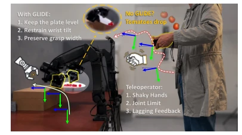
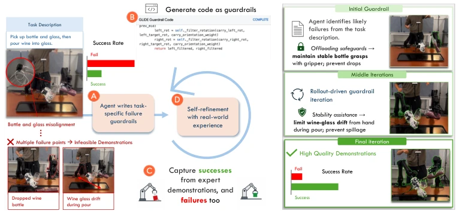
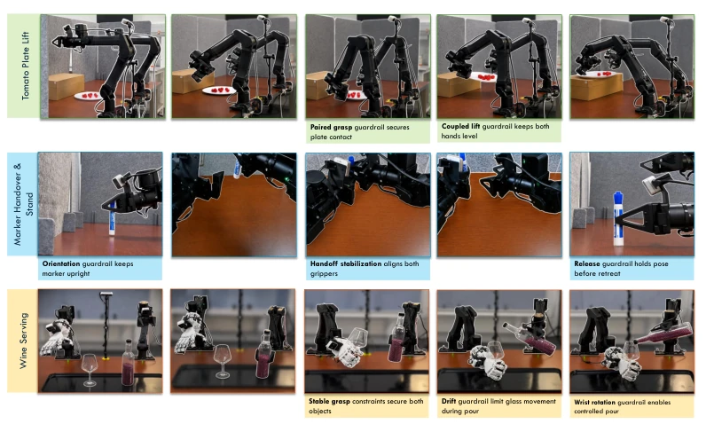
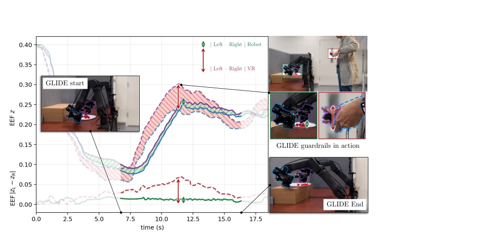

This paper is quite interesting, directly addressing a pain point in imitation learning: what if humans simply cannot demonstrate? GLIDE's strategy of 'drawing a circle as a prison' is clever; it uses code guardrails to intercept the human operator's 'self-destructive' behaviors, forcibly boosting the success rate from 0% to 90%. However, this essentially transforms the 'cannot learn' problem into a 'write code' problem; if the guardrails generated by the LLM are incorrect, the robot remains useless. Moreover, relying solely on proprioception (body sense) during runtime, without vision or tactile feedback, it is likely to fail in complex environments. Although data collection efficiency is improved, generalization is questionable since the guardrails are task-specific. Overall, it is a practical engineering trick, but far from general intelligence.
Behavior Cloning (BC) typically assumes humans can perfectly demonstrate tasks [1, 3], but reality is harsh. For tasks requiring dynamic stability or fine coordination (such as carrying a plate of tomatoes without spilling, pouring wine without spilling), human operators are often helpless, resulting in data collection success rates approaching 0%. Existing teleoperation interfaces like ALOHA [1] or OpenTV [8] lower the hardware threshold, but lack task-level constraint checks and cannot prevent human errors. Although some works attempt to handle imperfect demonstration data [20, 21], they typically intervene at the policy learning stage rather than during the data collection stage. GLIDE aims to address this 'infeasible-demonstration' (infeasible demonstration) regime by introducing executable guardrails to assist human operators, rendering originally uncollectable data usable.

Figure 1: GLIDE converts task descriptions into runtime guardrails that constrain error-prone naive teleoperation, enabling reliable data col- lection and policy learning for tasks that are dif- ficult to demonstrate directly.
The GLIDE framework is divided into three stages. First is Initialization, utilizing an LLM to generate initial guardrail code based on the task description and teleoperation code, constraining actions such as arm pose and wrist rotation. Second is Iterative Refinement, which is the core. The system collects teleoperation trajectories with guardrails, recording video and state, automatically diagnoses failure modes (e.g., plate tilting, wine bottle slipping), and then has the LLM revise the guardrail code based on feedback. This process loops multiple times until the success rate improves. Finally is Deployment, where the same guardrail code is used to filter both human teleoperation instructions and policy-predicted actions. Guardrails are lightweight executable code that infer task stages based on system state (e.g., gripper closed) at runtime and enforce constraints. This design enables guardrails to not only assist in data collection but also prevent the policy from outputting dangerous actions during execution, achieving full-process protection from data collection to policy deployment.

Figure 2: GLIDE methodology. (A) From the task description, GLIDE infers task-specific failure points and writes executable guardrails. (B) GLIDE generates guardrail code. (C) During data collection, the guardrails filter proposed commands while recording videos, robot states, proposed commands, and executed commands. GLIDE diagnoses outcomes and failure modes from these recordings. (D) GLIDE self-refines the guardrails over iterations; the resulting guardrails improve demonstration collection and also guard learned policies at deployment. The animation of this figure can be found at the project webpage.

Figure 5: Phase-wise GLIDE guardrail progression. Across the three evaluation tasks, trajectory feedback refines the initial guardrails into the optimal G∗ GLIDE: coordinated plate lifting and carry stabilization, marker handoff and release stabilization, and bottle-glass alignment and rotation assis- tance for controlled pouring. Task descriptions can be found at the project webpage.
Experiments were conducted on three tasks: tomato plate transfer, marker handover & standing, and wine pouring service. Baselines included OpenTV [8] without guardrails and expert hard-coded guardrails. Metrics included success rate, tomato retention count, and throughput. Results showed that OpenTV success rate was nearly 0%, while GLIDE optimized reached 70-90%. In terms of policy training, mixed data (containing some failed but controlled trajectories) combined with guardrail deployment yielded the best results, achieving a 70% success rate on the tomato task. Ablation studies indicated that self-iterative refinement was more effective than initial guardrails, and guardrails significantly improved policy robustness during deployment. However, relying solely on proprioception during runtime, lacking vision and tactile feedback, is the main limitation.

Figure 3: GLIDE on Tomato plate transfer. In naive teleoperation, discrepancies between the two VR controllers can create an inter-arm height mismatch that tilts the plate during transport. GLIDE activates during the carry phase and constrains the end-effector height difference, preserving plate stability as the robot lifts and transfers the plate. More results can be found at the project webpage.